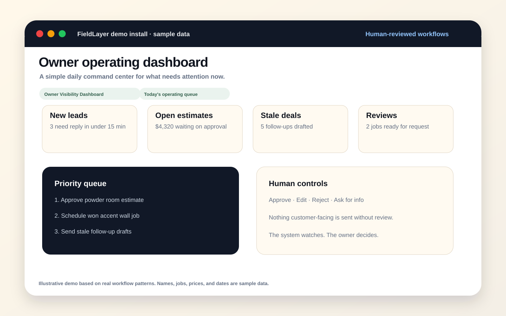
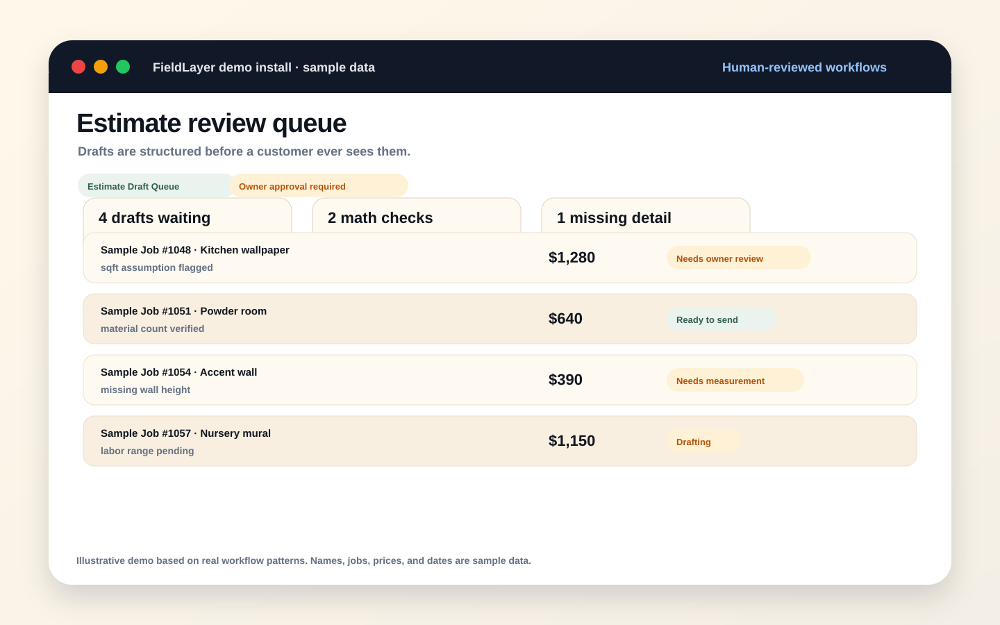
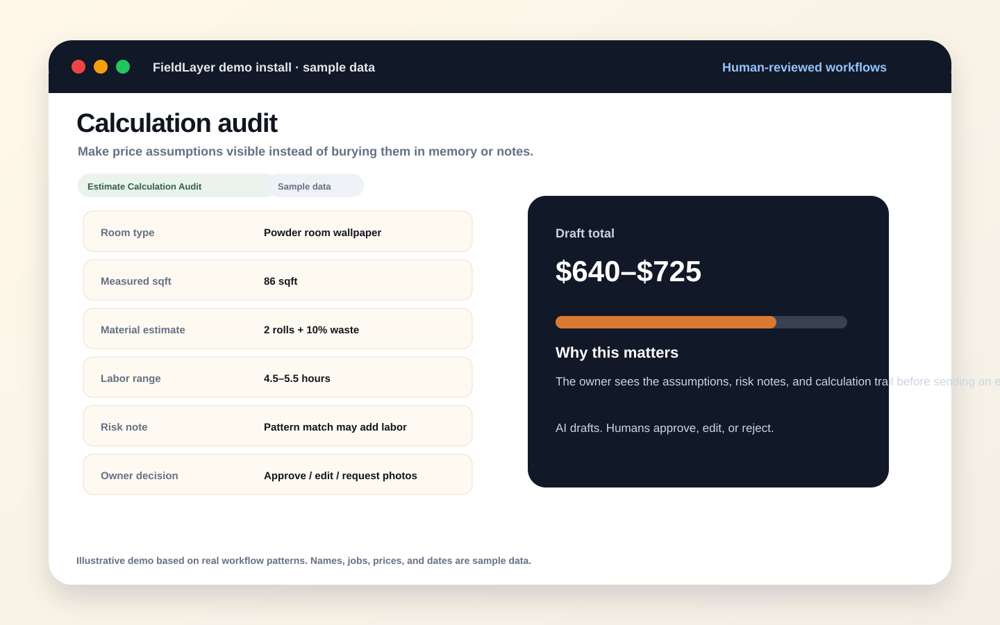
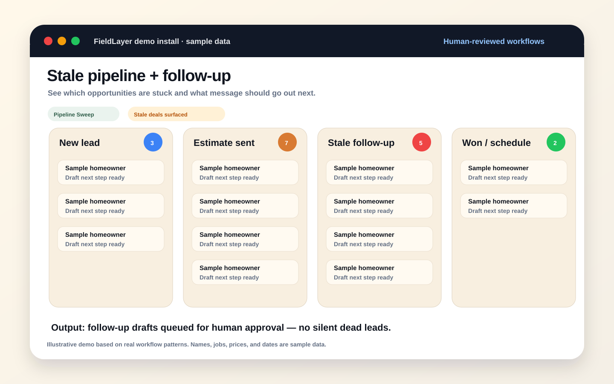
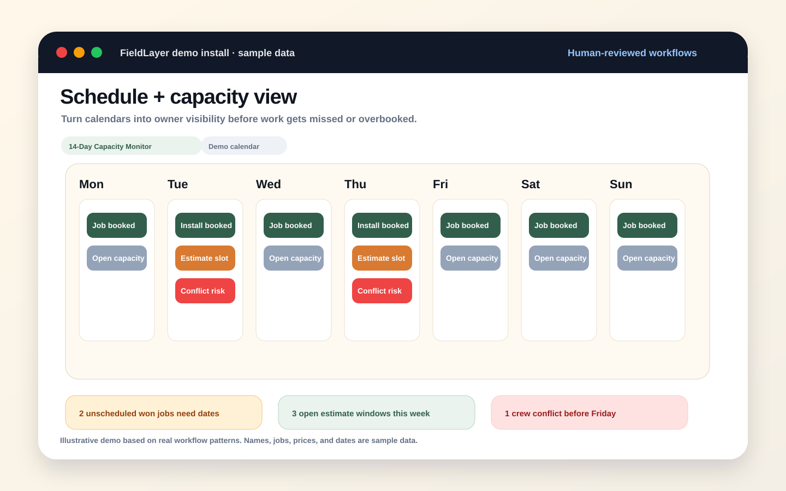

Install your first AI front-office workflow.
FieldLayer is a practical starter kit for home service owners who want AI helping with leads, estimates, follow-up, scheduling, reviews, and owner visibility — without letting a chatbot run the business.
What you buy: a leak map, workflow blueprints, prompt/script packs, implementation notes, demo install examples, and a 7-day path to install one human-reviewed workflow. No private customer data, no magic claims, no generic AI theory.
Launch incentive: the first 3 buyers who reply or message @rickships with their biggest front-office leak get a custom first-workflow map included.
What FieldLayer helps you build
A front-office workflow where AI drafts, calculates, sweeps, and flags — while the owner or operator approves the customer-facing move.
A starter kit for one real front-office install.
FieldLayer does not sell “AI education.” The Starter Kit shows you how to take one messy operational leak and turn it into a human-reviewed workflow your business can actually use.
Map the leak
Pick the money leak closest to revenue: missed leads, slow estimates, stale follow-up, unscheduled sold work, reviews, or owner visibility.
Define the workflow
Clarify the trigger, inputs, AI output, approval step, and the bad outcome the workflow prevents.
Install the manual version first
Use the included prompts, scripts, checklist, and examples to run the workflow with human review before automating it.
Use feedback to decide what to automate
Once the workflow is proven, you know what belongs in your CRM, calendar, inbox, GHL, QuickBooks, or automation stack.
The $29 Starter Kit includes the operating pieces.
The goal is not to hand you a vague PDF about AI. It is to give you the pieces to choose one front-office leak and install a simple workflow around it.
AI Opportunity Audit
A guided audit for finding where admin work leaks money: leads, estimates, follow-up, scheduling, reviews, and reporting.
Workflow Blueprints
Practical maps for lead intake, estimate drafting, stale follow-up, review requests, owner dashboards, and human approval loops.
Prompt + Script Packs
Copy-paste starting points for intake summaries, estimate drafts, follow-up messages, review asks, and daily owner updates.
Implementation Notes
How to think about fitting the workflow around tools like Go High Level, QuickBooks, calendars, inboxes, spreadsheets, or CRMs.
Demo Install Examples
Readable example screens showing what an estimate queue, calculation audit, pipeline sweep, and capacity monitor can look like.
7-Day First Install Path
A simple sequence for picking one workflow, running it manually, keeping approval in place, and deciding what to improve next.
By the end, you should know exactly what your first AI-assisted front-office workflow is, what it watches, what it drafts, who approves it, and what operational leak it is supposed to prevent.
If you are unsure where to start, pick the leak closest to revenue.
The Starter Kit is intentionally narrow: choose one front-office leak, run the workflow manually with AI drafting and human approval, then decide what deserves automation after the correction loop is visible.
The three-step install discipline
- Pick one leak: intake, estimate, follow-up, schedule, reviews, or owner visibility.
- Let AI draft, calculate, sweep, summarize, or flag — but keep a human approval point.
- Use corrections to decide what to automate, change, or leave manual.
Start where the money leaks.
The first proof layer comes from anonymized workflows and sample-data install examples. These show the operating pattern without exposing private customer data.
Estimate drafting + recalculation
New request or owner correction → structured draft with labor, material count, sqft assumptions, room type, and calculation notes → human review.
Stale pipeline + follow-up drafting
Deals sit too long → stale-deal sweep and follow-up drafts → human approves, edits, rejects, or sends.
Schedule + capacity monitoring
Calendar sweeps → 7–14 day view of bookings, openings, unscheduled work, conflicts, and underbooking risk → ops decides.
Lead intake
Turn messy calls, forms, and voice notes into structured job details and missing-info requests.
Client messaging
Draft useful, on-brand replies and scheduling messages without giving untested automation the customer relationship.
Owner visibility
Show what needs attention today: new leads, open estimates, stuck jobs, review opportunities, and capacity risk.
Make the operating layer visible.
Instead of showing private client data, these clean demo screens show what a FieldLayer-style setup can look like after install: owner queues, approvals, calculations, schedule risk, and visibility.

The daily queue shows new leads, open estimates, stale follow-ups, review opportunities, and what needs approval.

Draft estimates wait for owner approval before anything customer-facing is sent.

Labor, material, sqft assumptions, and notes are structured for review.

Stuck opportunities surface with next-step drafts for human approval.

Bookings, openings, unscheduled committed work, and conflict risk in one view.
A public decision table for choosing the first safe AI install by leak, queue, approval rule, and operator risk. View the picker.
A sample-data owner card for messy new leads: raw request, job details, missing-info question, risk flag, and human approval. View lead triage.
A safe callback loop for missed calls: AI drafts the lead card and callback script, then a human approves before response. View missed-call loop.
A sold-work handoff loop: accepted estimate, capacity check, scheduling options, human approval, and logged commitment. View schedule loop.
A stale-estimate queue: AI flags warm deals going quiet, drafts the next touch, and waits for human approval. View follow-up loop.
A final-15-minutes owner queue: AI sweeps open loops, drafts next moves, and the human decides what carries overnight. View closeout loop.
A safe pre-estimate loop: AI structures scope, flags missing info, drafts the question, and a human approves assumptions. View handoff loop.
A next-day owner queue: AI summarizes overnight carryover, drafts the first move, and humans approve before customers hear from the business. View reopen loop.
A sample review card that separates what AI found, what AI drafted, risk flags, owner decision, and the correction captured. View the approval card.
Sample-data walkthrough: lead comes in, missing info is flagged, AI drafts the customer question, and the owner approves before anything is sent.
Owner edits the missing-info question, fixes an assumption, and the next draft gets sharper while approval stays in place.
Sample-data workflow: job complete, happiness check, AI drafts the ask, human approves, review status is tracked.
The first 10 minutes after checkout: pick one leak, map the queue, set approval, run one safe test, capture the correction.
Building from zero means documenting the work and the metrics.
FieldLayer now has a public scoreboard and build log for launch decisions, proof assets, early audience metrics, spend, revenue, and learning-loop notes. The goal is trust through visible work, not polished claims before operator feedback exists.
Current public scoreboard
Day 4. Known spend: about $7.25. Known revenue: $0. Known buyers: 0. Public proof screens: 18. Build posts shipped/prepared: 41+. Cold DMs/emails: 0. The scoreboard is intentionally conservative until numbers are verified.
Before you buy another CRM, map where work actually stalls.
Most home-service software decisions are really workflow decisions: leads, estimates, follow-up, scheduling, reviews, and owner visibility. FieldLayer now has a simple leak map for choosing the first workflow to fix.
The rule
Do not add automation to a vague process. Pick one leak, define the trigger, draft the next move, and keep a human approval step until the workflow is proven.
FieldLayer Starter Kit
A practical kit for installing your first human-reviewed AI front-office workflow in a home service business.
Buy on WhopDelivery is inside Whop. After checkout, buyers get the course module, templates, prompts, scripts, implementation notes, and first-install checklist.
First 3 launch buyers: send @rickships your biggest leak — leads, estimates, follow-up, scheduling, reviews, or owner visibility — and I’ll include a custom first-workflow map.
10-minute buyer test: after checkout, the first job is simple: open the kit, choose one leak, and write the human approval point before adding any automation.
Best first install: pick one lead source, one follow-up leak, and one human approval point. Build the manual version before automating anything. Improve only after real operator feedback shows what is missing.
What you get
- Leak map: find where front-office work is costing time or revenue
- Workflow blueprints: lead intake, estimates, follow-up, scheduling, reviews, owner visibility
- Prompt/script packs: drafts, missing-info asks, follow-ups, review requests, owner updates
- Tool-fit notes: how to think about GHL, QuickBooks, calendars, inboxes, spreadsheets, and CRMs
- Demo install examples: estimate queue, calculation audit, pipeline sweep, capacity monitor
- 7-day implementation checklist: install one workflow manually before automation
Built for operators who want useful AI, not another toy.
This is for you if…
- You run or manage a home service business and personally feel the admin leaks.
- Leads, estimates, follow-up, scheduling, reviews, or owner reporting still depend on memory.
- You want AI to draft and organize work while humans keep approval.
- You need a practical starting map before buying software or hiring an automation shop.
This is not for you if…
- You want fully autonomous customer-facing AI on day one.
- You expect guaranteed revenue from a $29 template kit.
- You do not have a repeatable lead, estimate, or service workflow yet.
- You want private screenshots or customer data from another business.
What should I install first?
Choose the leak closest to money already in motion: new lead intake, estimate drafting, estimate follow-up, scheduling, reviews, or owner visibility. For most owners, the fastest first install is lead intake plus estimate follow-up with human approval.
Does this replace my CRM?
No. FieldLayer is positioned as the operating layer around your existing tools. The kit helps you map the workflow before deciding what to automate in GHL, Jobber, Housecall Pro, ServiceTitan, QuickBooks, spreadsheets, or inboxes.
Will AI send messages to customers automatically?
Not by default. The FieldLayer rule is: AI drafts, calculates, sweeps, summarizes, and flags. Humans approve, correct, send, schedule, and decide until the workflow is proven reliable.
What happens after I buy?
You check out through Whop and get access to the Starter Kit course. Start with the quick-start checklist. The first 10-minute test is to pick one workflow leak and name the human approval point before you automate anything.
Need help finding the first workflow?
If you buy the kit and want a second set of eyes on your actual operation, FieldLayer can map the top front-office leaks and the safest first human-reviewed AI workflow to install.
This is for inbound buyers or operators who ask for help — not cold outreach. No private customer data in public, no revenue guarantees, and no autonomous customer-facing AI before the workflow is proven manually.
The audit looks for leaks in:
- Lead intake and missed-call response
- Estimate drafting, recalculation, and approval
- Stale pipeline follow-up and nurture
- Scheduling, capacity, and unscheduled sold work
- Reviews, referrals, and owner visibility
Output: a leak map, top 1–3 workflow opportunities, one first-install spec, and a 7-day manual implementation plan.